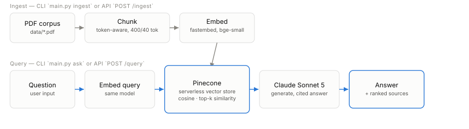

A from-scratch RAG pipeline, and the eval iteration that shaped it
Retrieval-augmented generation over the NASA Systems Engineering Handbook — built without LangChain/LlamaIndex specifically to be able to defend every design choice below, not just cite a framework default.
Executive summary
A RAG pipeline (ingest → chunk → embed → store → retrieve → generate) built from scratch over a 4-day sprint, then hardened with an eval harness, a FastAPI service layer, structured observability, a hermetic test suite, Docker, and CI — the parts of "production-shaped" that separate a working demo from something worth putting on a resume.
The single most important thing this project produced isn't a number — it's a documented, evidence-backed iteration: an eval run that looked perfect turned out to be measuring the wrong thing (a ceiling effect from a 16-chunk corpus); chasing that led to finding a real correctness bug (silent embedding truncation from word-based chunk sizing); fixing that bug surfaced a new, precisely diagnosed failure mode (a process list fragmented across a chunk boundary on pages 15–16). Each step is backed by the actual retrieved chunks and judge verdicts, not just an aggregate score — see the chunking iteration story for the full walkthrough.
| Metric | Value |
|---|---|
| Recall@5 (18 answerable questions) | 0.944 |
| MRR | 0.801 |
| Faithfulness | 1.0 |
| Relevance | 1.0 |
| Scope accuracy (answerable + out-of-scope) | 0.864 |
| Unit tests (hermetic, no live calls) | 23 passing, ~2s |
What this is not: a benchmark result. 22 questions over one ~8,000-word PDF is a smoke test with a real, documented failure mode still open (see limitations) — stated here rather than left for an interviewer to discover.
Architecture
Two entry points — a Typer CLI (main.py) for local use and a
FastAPI service (src/api/) for the production-shaped surface —
call the same core modules, each composed at its own composition root
rather than duplicating pipeline logic. The query path (bottom, accent
color) is what the live service actually serves on every request; the
ingest path (top, muted) runs once per corpus change.

Why built from scratch
No LangChain or LlamaIndex. The explicit trade: reimplementing plumbing (chunking, prompt assembly, the vector-store interface) that a framework would give for free, in exchange for being able to explain retrieval, chunking, and prompting from first principles — "the framework handles that" isn't a defensible answer in an interview, and it also would have hidden the truncation bug described below inside a library instead of surfacing it as something this project actually found and fixed.
Design decisions
Each choice below names the alternative considered, not just the outcome — the trade-off is the part worth defending, not the tool name.
Pinecone, behind a VectorStore interface
Chosen over a local store (FAISS/Chroma) for a serverless free tier with no
infra to babysit, and because it's an industry-recognizable name. The
VectorStore Protocol keeps the choice swappable in principle —
and that's not a decorative abstraction: a hand-written
FakeVectorStore already implements the same Protocol purely for
hermetic tests, so the interface has a second real implementation, not just
the one.
Claude Sonnet 5 for generation, Haiku 4.5 as a configurable cheaper swap
The model name lives in src/config.py, never hardcoded at a
call site — swapping models (or A/B-ing them) doesn't touch pipeline code.
FastAPI: sync def endpoints, not async def
Pinecone, Anthropic, and fastembed are all synchronous SDKs. FastAPI
auto-dispatches plain def path operations to a threadpool, so
sync SDK calls never block the event loop — making the endpoints
async def without also swapping in async clients would have
been the wrong call for no benefit.
Gunicorn managing Uvicorn workers, not a bare Uvicorn process
A single Uvicorn process is one OS process with one GIL: I/O-bound work
(waiting on Pinecone/Anthropic) benefits from the threadpool, but CPU-bound
work (tokenizing, embedding) still serializes on one core, and a single
unhandled crash takes the whole service down. Multiple Gunicorn-managed
workers add multi-core use and per-worker crash isolation/auto-restart —
single-host (vertical) scaling, a different axis from the horizontal
scaling an orchestrator would add (out of scope here). Worker count is
env-var configurable (WEB_CONCURRENCY, default 2) rather than a
CPU-count formula, since this app's per-request cost is dominated by
network wait, not CPU — and each worker loads its own copy of the embedding
model into memory, so more workers isn't free.
Composition-root dependency wiring, not a global client
Both the CLI and the API build PineconeStore/the Anthropic
client once (CLI: at the start of each command; API: once at startup via
lifespan + Depends()) and pass them down, rather
than constructing them wherever they're used. Rebuilding
PineconeStore per call would re-run its index-existence check —
a real network call — every time.
The chunking iteration story
Three chunking configurations were actually run against live Pinecone and Anthropic, each in an isolated namespace so a regression could never contaminate an already-verified result. The numbers moved down, twice — and each time, that was the correct signal.
1. The baseline looked perfect — and that was the problem
Word-based chunking, 500 words / 50-word overlap, produced
recall@5 = 1.0, MRR = 0.863, faithfulness/relevance/scope accuracy
all 1.0. The cause: the ~8,000-word corpus produced only
16 chunks total, so top_k=5 retrieved 31% of
the entire corpus on every single query. recall@1 (0.778) was the only
metric strict enough to still show any spread. A perfect score here meant
the eval wasn't discriminating, not that retrieval was flawless.
2. Shrinking chunk size alone: a real regression, two distinct causes
Ran a second ingest into an isolated small_chunks namespace at
150 words / 15-word overlap (same 10% overlap ratio, so chunk size was the
only variable that changed) — 54 chunks instead of 16. Result: recall@5 fell
to 0.944, scope accuracy fell to 0.955.
Two specific, individually diagnosed failures, not just an aggregate dip:
- q12 ("What is AS9100...") hit at rank 1 in the baseline (a chunk spanning pages 17–19) but was missed entirely in the top 5 at the smaller size — a short passage got diluted or split away from the surrounding context that made the larger chunk's embedding a strong match. Smaller isn't strictly more precise; it can dilute a short passage's signal.
- q08 ("the four System Design Processes...", pages 15–16) was retrieved at rank 1 by the recall@k metric — a technical success — but the answer-quality judge caught what recall@k structurally cannot: the four-item list was fragmented across chunk boundaries, no single retrieved chunk contained the complete list, and the model correctly refused to answer. A page-level hit is necessary but not sufficient for a complete answer — exactly why this project runs both a retrieval eval and an answer-quality eval, not either alone.
3. Before tuning further: was chunk size even the right thing to tune?
Checked whether word-count chunking was measuring the right unit at all — it wasn't. Counting real tokens with the embedding model's own tokenizer showed 500-word chunks averaged ~700 tokens against the model's hard 512-token limit — about 35% over. fastembed was silently truncating roughly the last third of every chunk's text before embedding it, on every chunking configuration tested so far, including the "perfect" baseline. This reframes the smaller-chunk regression above: it was never cleanly isolating chunk size as a variable, because the starting point was already broken in a way nobody had checked for.
4. The fix: token-aware chunking
Chunks are now counted and sliced using the exact tokenizer fastembed uses
internally for the embedding call itself (reached via
model.model.tokenizer, a documented private attribute path,
flagged as the one place to fix if a fastembed upgrade breaks it) — 400
tokens / 40-token overlap, the same 10% ratio as every prior configuration.
Chunking runs against a cloned tokenizer instance with truncation
disabled (the full document text is longer than any one window), and chunk
text is sliced from the original page text using each token's character
offset rather than decoded back from token ids — so chunk text stays
byte-identical to the source instead of picking up WordPiece decode
artifacts. Promoted to the default namespace.
5. What moved, and why that's not a regression
Recall@5 landed at 0.944, MRR at 0.801, scope accuracy at 0.864 — flat to slightly down again. This is the same ceiling-effect-unmasking pattern as step 2, not a new problem the fix introduced: on a 22-question eval over a corpus this small, real discrimination shows up as movement — the two earlier "perfect" runs were the anomalies, not this one.
Scope accuracy is the metric that actually moved (1.0 → 0.864), and the
retrieval logs pin down exactly why: three answerable questions — q08, q09,
q10, all three ground-truthed to pages 15–16 — now fail.
Across every chunking scheme tried (500/50 word, 150/15 word, 400/40 token),
the retrieved chunks for these questions land on adjacent-but-different page
spans (3, 14–15, 16–17, 17–18, 20) — never one chunk that cleanly covers the
process-category list spanning 15–16. The model faithfully refuses rather
than hallucinate in all three cases (faithful: true) — but the
refusal is wrong, because the real answer exists in the corpus, just split
across a chunk boundary no scheme so far has avoided.
Retrieval & generation methodology
Retrieval
fastembed's BAAI/bge-small-en-v1.5 (384-dim)
embeds both corpus chunks and queries; Pinecone does cosine-similarity
top-k. retrieve() takes the VectorStore as a
parameter rather than constructing one internally — the same
dependency-injection pattern used throughout — so it stays importable and
testable without live Pinecone credentials.
Generation
The system prompt restricts Claude to the provided context only, instructs
it to say "I don't know" rather than reach for outside knowledge, and
requires bracketed citations ([1], [2]) matching
the numbered context entries. Sources are returned as structured data
(source file, chunk id, page range, similarity score) alongside the answer
text, not just as prose — so a caller can render citations programmatically
rather than parse them out of the answer.
Answer-quality evaluation: LLM-as-judge
Claude Sonnet 5 judges each generated answer on two strict true/false axes — faithful (no claim unsupported by the retrieved context; a correct refusal is always faithful) and relevant (does it address the question) — plus whether it refused to answer at all. Binary pass/fail rather than a 1–5 scale was a deliberate choice: this eval exists to produce a before/after comparison across chunking configurations, and a finer-grained scale is more prone to run-to-run judge-calibration noise being mistaken for a real quality change.
A real bug the eval harness itself surfaced: Claude Sonnet 5 runs adaptive
thinking on by default, and thinking tokens count against
max_tokens. The judge's classification-only call used a small
budget (max_tokens=256) that could occasionally be consumed
entirely by thinking, leaving no room for the JSON verdict. Fixed by
disabling thinking explicitly for that call. The same latent bug class
exists in generate()'s 1024-token budget — lower risk given the
larger budget, flagged rather than silently left alone.
Observability
The API emits structured JSON logs — queryable by a real log aggregator, not
just human-readable text — a deliberate split from the CLI, which keeps its
existing plain-stdout output for a person reading a terminal. A per-request
ID is propagated via contextvars and a logging.Filter,
so no function signature in the embed → retrieve → generate call chain needs
to carry it, and it ties together every log line for a request, including
from third-party loggers (pinecone, httpx) that
also propagate to the root logger.
Per-stage latency and per-request estimated cost are logged directly. A real
/query call against live Pinecone/Anthropic logged:
| embed_and_retrieve | 1,612 ms |
| generate | 2,496 ms |
| input tokens / output tokens | 4,239 / 83 |
| estimated cost | $0.0093 |
Generation dominates request latency, not retrieval — a real finding worth
having before optimizing the wrong stage. Cost is computed from a hardcoded
per-model pricing table (dollars per million tokens) for the two models this
project actually configures; it returns None, not a guess, for
any other model.
Testing, CI & deployment
23 hermetic unit tests
No real API calls, no model downloads, full suite runs in under 2 seconds.
Covers chunking edge cases (chunk-size respect, overlap sharing, a
redundant-tail guard, page provenance, byte-identical text slicing), batch
embedding, PineconeStore against a mocked
pinecone.Pinecone client, retrieve()/generate()
against a hand-written FakeVectorStore, and all three API
endpoints via TestClient. A real hermeticity gap was found and
fixed along the way: fail-fast config loading (correct in production) broke
test collection in any environment without a real .env
— fixed with dummy env-var fallbacks set before any src.*
import, verified not to touch a real local .env.
CI: two parallel jobs, zero secrets
GitHub Actions runs lint (ruff) and test (pytest)
in parallel on every push/PR, with no repository secrets configured — the
test suite's hermeticity means it doesn't need any. Verified the exact
commands from a completely clean repo copy in a fresh venv, with no real
.env, before ever pushing the workflow.
Docker: Gunicorn + Uvicorn workers
Single-stage python:3.12-slim build; see
design decisions for the process-manager
rationale. data/ (where uploaded PDFs persist) is meant to be
mounted as a volume so uploads survive container restarts.
docker build/docker run were never exercised
directly. What was verified: a clean, non-editable
pip install . from the exact file set the Dockerfile copies,
and the literal Gunicorn CMD run locally against real Pinecone/Anthropic
credentials — two independent worker processes booted, each completed
lifespan startup, both served real /health
requests. The actual container build is the one piece still unverified.
Known limitations & roadmap
Stated in the README/whitepaper deliberately, not left for an interviewer to find first.
- Single small corpus (~8,000 words, 18–54 chunks depending on scheme) — proves the pipeline works, exercises none of the hard problems at scale (incremental re-indexing, dedup, staleness, sharding).
- Naive-RAG-plus, not advanced RAG — no hybrid BM25+dense search, no re-ranking, no query rewriting/decomposition.
- 22-question eval set is a smoke test, not a statistically meaningful benchmark.
- LLM-as-judge self-preference bias — partially mitigated (hand spot-checked), not fully (no second judge model, no stricter reference rubric yet).
- Pages 15–16 chunk-boundary fragmentation — a known, precisely diagnosed open issue (see the chunking story above), the clearest concrete next lever.
- "Production-shaped," not production-proven — no real traffic, no load testing, no live monitoring.
- Docker build unverified on the actual Docker CLI — equivalent components verified directly instead (see above).
Roadmap, in priority order
- Grow the eval set to 75–100+ questions, including more adversarial/ambiguous cases.
- Mitigate judge bias: report hand-spot-check agreement rate; add a second judge model or a stricter reference-based rubric.
- Resolve the pages-15–16 fragmentation: try a structure-aware chunker or corpus expansion, whichever the next session's diagnosis favors.
- Hybrid search (BM25 + dense, reciprocal rank fusion) and re-ranking on top-k candidates.
- Real deployment with load testing and basic monitoring, beyond a local Docker build.